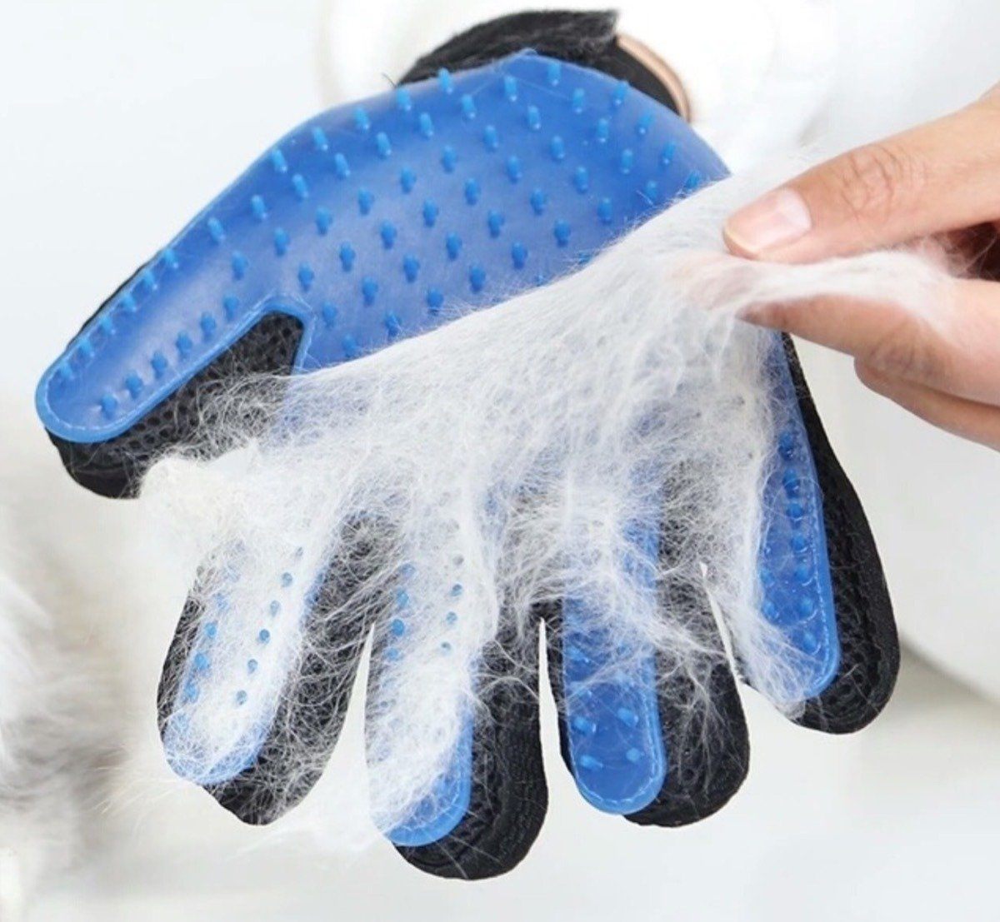

Elimina los pelos de gato que se pegan en la ropa y los muebles de tu casa con el nuevo guante cepillo para peinar. Este producto hecho a base de goma te permite peinar a tu mascota para retirar los pelos sueltos y evitar que se acumulen en espacios no deseados.
Precio: 20.000 COP
Consiente a tu mascota y mantelo limpio tu hogar
Compra guante cepillo